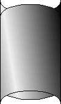

- obdĺžnik
- štvorec
- elipsa
- kruh
- n-uholník
- hviezdy
- oblé lístky
- špicaté lístky
- hyperbolové hviezdy
- zahnuté ružice
Zvolíme si zobrazenie siete. Začneme kresbou obdĺžnika a v galérii výplň si zvolíme typ výplne lineárna. Stlačíme edit. Chceme aby sa farby plynule menili vo vodorovnom smere. Čo máme k dispozícii:
- farba na ľavom okraji - kliknutím na obdĺžnik s farbou môžme farbu meniť
- farba na pravom okraji - kliknutím na obdĺžnik s farbou môžme farbu meniť
- tlačidlo pridať - umožní nám medzi krajné farby pridať ďalšiu - uchopením šipky možno meniť polohu vloženej farby
- uhol - možno meniť smer v ktorom sa farby menia
- krokov - určuje jemnosť prechodu
| výsledkom by mal byť nasledovný obdĺžnik | 
| Na zaoblenie hornej a spodnej hrany musíme obdĺžnik rozbiť kladivom. Potom zmeníme hornú a dolnú úsečku na ovály (derivácie vedieme kolmo dole) Je vhodné mať všetky 4 derivácie rovnakej veľkosti a smeru. | 
|
| Týmto máme prednú stenu a teraz urobíme zadnú. Stlačíme - aktivujeme kopírovacie tlačidlo v alternatívnom paneli bielej šipky a zvolíme preklopenie okolo osy x. Výsledkom bude nasledovný obrázok. |  | Vypneme kopírovanie a zadnú stenu presunieme úplne naspodok a posúvaním docielime aby splynuli krajné body.
V galérii výplň preklopíme farby (tlačídko | |
| Z valca pomocou nástroja perspektíva vytvoríme lievik | A na zaver doňho ešte nasypeme zopár guličiek (kreslíme si ich samozrejme naboku) | 
|